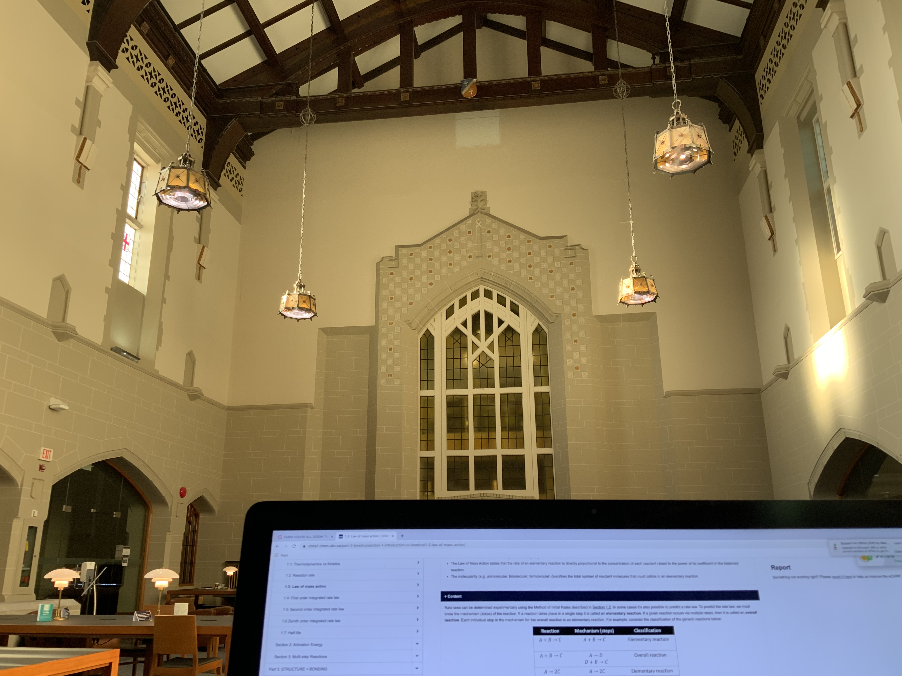
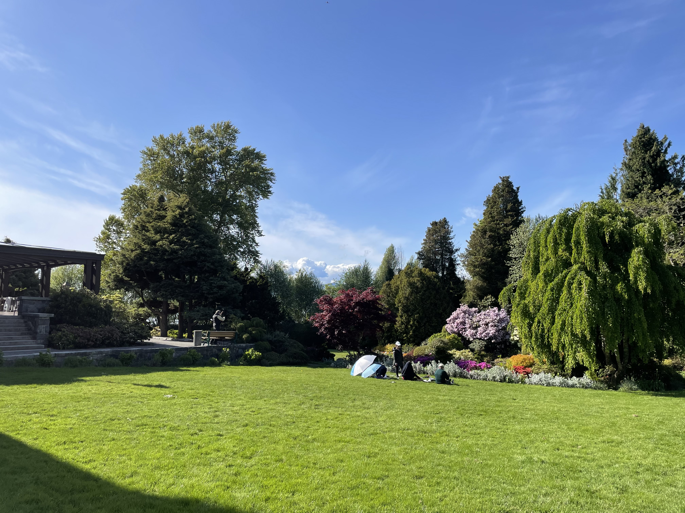
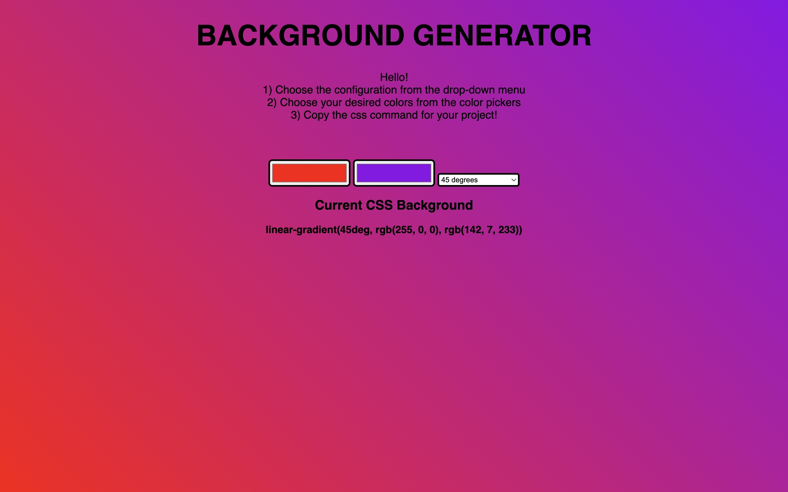
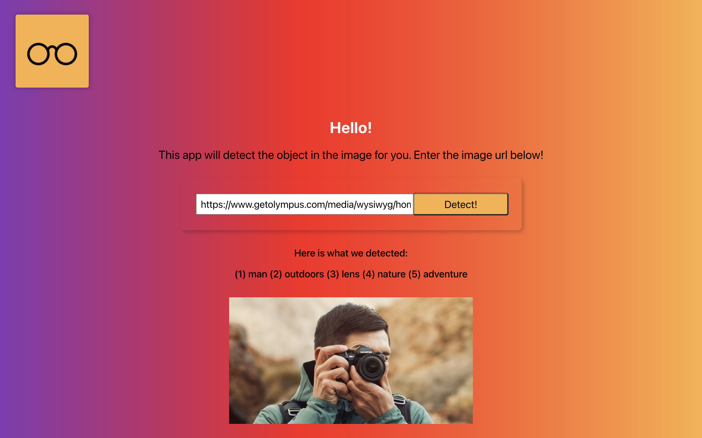

Hello! I am Sparsh, a second year Computer Science major at the University of British Columbia. I was born and brought up in India, and moved to Vancouver in 2020 in pursuit of higher education.
My introduction to programming was in my grade 8 computer lab. We were shown some very basic shape drawings in k-turtle. I remember finding it extremely tedious and unnecessary at the time, so when it was time to choose our electives in grade 9, I went with Economics. For the next two years I would not explore programming any further, I knew it wasn't for me.
Fast forward to grade 11, it was time to choose a new elective. I had to choose from 1) Economics 2) Biology and 3) Computer Science. I didn't enjoy Economics in grades 9 and 10, and Biology was a lot of rote learning, so I went with CS.
I struggled a lot in the first few weeks of classes. Most of my peers had some kind of background in programming, but I had no clue what was going on in class. I remember entering my first CS lab not knowing what an IDE was. I took help from both my peers and my teacher, and was able to wrap my head around the basics of C++. CS was the only class I used to look forward to, so naturally when it was time to pick a major for college, I went with CS.
I have thoroughly enjoyed my time as a CS major. The fact that it is pure logic and encourages lateral thinking is what draws me to CS. Collaborating with others to find creative solutions to problems is a dream of mine. I have explored my interest in web development through some personal projects, and a systems design course I took last semester has also piqued my interest in systems design. I look forward to exploring Artificial Intelligence through some AI courses at UBC.
This journey from stronly disliking CS to loving CS has been incredible, and I can't imagine pursuing anything else.
Tabla: Tabla is an Indian classical percussion instrument, and I have learnt it for over 9 years. I have also had the privalege of playing in large venues with renouned artists.

Sketching: Sketching is something I do in my free time, and I find it incrediably theraputic.

Cooking: I am probably the only person who can eat meals cooked by me, but I really enjoy experimenting with recipes. I have come up with some very interesting creations in my test kitchen.

Swimming: I absolutely love swimming. I have been swimming since a very young age, and I would go swimming almost daily during the hot summer months.
An interactive coffee ordering application. The application allows the user to add drinks to cart, remove drinks from cart, view order summary, place order and generate bill. The application also loggs and keeps track of when a drink is added or removed from the cart. I implemented the Json reader and writer classes to add saving and loading functionality. I used the Java Swing library to add a graphical user interface to make the application more user friendly. The application was written with software design principles in mind.
Languages: Java

Constructed a PTree(a binary tree whose nodes represent rectangular regions of a PNG image). Implemented the render function to contruct the PNG. Implemented the Prune function which attempts, starting near the top of a freshly built tree, to remove all of the descendants of a node, if all of the leaf nodes below the current node have colour within tolerance of the node's average colour. Pruning degrades the image quality. Finally, I implemented two additional functions to flip the PTree horizontally and vertically.
Languages: C++

Before pruning

After pruning
This was my first web-development project which I use to display all my work. I wrote out the entire skeleton of the website in HTML and styled it using CSS and Bootstrap.
Languages: HTML, CSS
This application allows a user to pick the kind of gradient and the composite colours from a colour picker, and displays the chosen background along with the corresponding CSS code. I have used this application to generate gradient backgrounds for some of my future projects.
Languages: HTML, CSS, JavaScript

A frontend application that allows a user to enter an image url and detects the object in the image. I used the Clarifai-API, an API that uses machine learning to detect the object in an image. I selected the top 5 most probable results to display to the user. The image corresponding to the url is also displayed along with the result.
Languages: JavaScript, CSS
Framework: ReactJS

| Course | Grade(%) | Letter Grade | Credits Earned | Class Average |
|---|---|---|---|---|
| MATH 100: Differential Calculus with Applications to Physical Sciences and Engineering | 90% | A+ | 3.0 | 65% |
| SCIE 113: First-Year Seminar in Science | 80% | A- | 3.0 | 78% |
| CHEM 120: Structure and Bonding in Chemistry | 84% | A- | 3.0 | 74% |
| CPSC 110: Computation, Programs, and Programming | 76% | B+ | 4.0 | 78% |
| MATH 101: Integral Calculus with Applications to Physical Sciences and Engineering | 90% | A+ | 3.0 | 73% |
| CHEM 130: Thermodynamics, Kinetics and Organic Chemistry | 75% | B | 3.0 | 75% |
| CHEM 115: Introductory Chemical Laboratory I | 83% | A- | 1.0 | 83% |
| BIOL 111: Introduction to Modern Biology | 80% | A- | 3.0 | 79% |
| ATSC 113: Applied Meteorology | 98% | A+ | 3.0 | 93% |
| CPSC 121: Models of Computation | 84% | A- | 4.0 | 77% |
| WRDS 150B: Writing and Research in the Disciplines - RSRCH&WRIT HUMAN | 69% | B- | 3.0 | 77% |
| Course | Grade(%) | Letter Grade | Credits Earned | Class Average |
|---|---|---|---|---|
| MATH 200: Calculus III | 86% | A | 3.0 | 69% |
| CPSC 210: Software Construction | 85% | A | 4.0 | 79% |
| STAT 251: Elementary Statistics | 86% | A | 3.0 | 76% |
| CRWR 213: Introduction to Writing for the New Media | 86% | A | 3.0 | 84% |
| MATH 221: Matrix Algebra | 92% | A+ | 3.0 | 78% |
| CPSC 213: Introduction to Computer Systems | - | - | - | - |
| CPSC 221: Basic Algorithms and Data Structures | 90% | A+ | 4.0 | 83% |